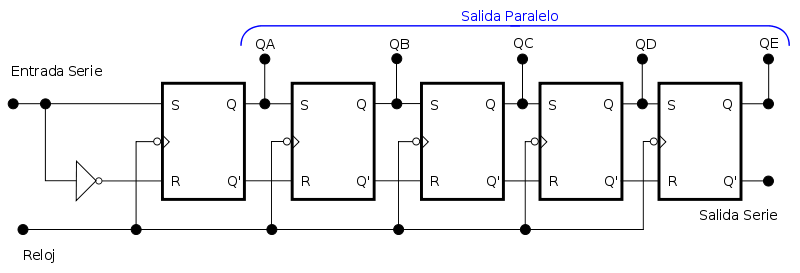
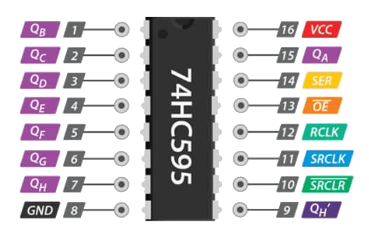

En este tema vamos a ver como aumentar las salidas digitales de Arduino con el registro de turnos, también llamado registro de desplazamiento. Pero con estos chips no solo vamos a poder manejar una matriz de LEDs sino que aumentaremos las salidas digitales para el propósito que queramos y se hacen fundamentales para multitud de proyectos.
(1) x Placa Arduino
(1) x Protoboard
(1) x Registro De Turnos 74HC595
(2) x LED
(2) x Resistencia de 100 Ohm
(x) x M M cables (cables de macho a macho)
¿Alguna vez te has encontrado queriendo controlar muchos LEDs? ¿O sólo necesitabas más pines de E/S para
controlar botones, sensores, servos, todo a la vez? Bueno, podrías conectar unos cuantos sensores a los
pines de Arduino, pero rápidamente te quedarías sin pines en tu placa.
La solución para esto es usar un Registro de turnos. Un registro de desplazamiento te
permite ampliar el número de pines de E/S que puedes utilizar de tu Arduino. Y el registro de desplazamiento
74HC595 (apodado ‘595’) es uno de los más famosos entre todos.
El 595 controla esencialmente ocho pines de salida separados, usando sólo tres pines de entrada. Y si
necesitas más de 8 líneas de E/S adicionales, puedes encadenar fácilmente tantos registros de desplazamiento
como quieras y crear toneladas de líneas de E/S.
Los registros de turnos se utilizan a menudo con el fin de guardar los pines del microcontrolador, ya que
cada microcontrolador tiene un número limitado de pines de E/S (GPIO).
Si tu proyecto necesita controlar 16 LEDs individuales, eso normalmente requeriría 16 pines de un Arduino.
En el caso de que no tengas 16 pines de E/S disponibles, aquí es donde el registro de desplazamiento es útil
y entra en juego. Con dos registros de cambio conectados en serie, podemos realizar la tarea de controlar
los 16 LEDs con sólo 3 pines de E/S. Y no sólo esto; puedes guardar más pines cuanto más registros de
desplazamiento tengas encadenados.
Un ejemplo del mundo real que utiliza el registro de desplazamiento es el «Mando Original de Nintendo». El
mando principal de la Nintendo Entertainment System necesitaba que se pulsaran todos los botones en serie, y
utilizaba un registro de desplazamiento para realizar esa tarea.
Los registros de desplazamiento vienen en dos tipos básicos, o bien SIPO (Serial-In-Parallel-Out) o PISO
(Parallel-In-Serial-Out). El popular chip SIPO es 74HC595, y el chip PISO es 74HC165.
El tipo SIPO es útil para controlar un gran número de salidas, como los LEDs. Es el chip que vamos a
utilizar en nuestro ejemplo.

El tipo PISO es bueno para reunir un gran número de entradas, como botones; como el que se utiliza en el mando original de Nintendo como se ha mencionado anteriormente.
El 595 tiene en una variedad de marcas y modelos. Aquí hablaremos del modelo Texas Instruments SN74HC595N que es el más habitual. Vamos a conocer cada uno de sus pines.

- GND (8): Debería estar conectado a la tierra de Arduino.
- VCC (16): Es la fuente de alimentación para el registro de cambio 74HC595 que
conectamos al pin 5V de Arduino.
- SER (Serial Input) (14): Se utiliza para alimentar los datos en el registro de
cambio de un bit a la vez.
- SRCLK (Shift Register Clock) (11): Es el reloj del registro de cambio. El 595 es
impulsado por el reloj en el borde ascendente. Esto significa que para desplazar bits en el registro
de desplazamiento, el reloj debe estar ALTO (HIGH). Y los bits se transfieren en el borde ascendente
del reloj.
- RCLK (Register Clock/Latch) (12): Es un pin muy importante. Cuando se maneja en
ALTO (HIGH), el contenido del Registro de Desplazamiento se copia en el Registro de
Almacenamiento/Reloj, que finalmente se muestra en la salida. Así que la clavija del pestillo puede
ser vista como el paso final en el proceso de ver nuestros resultados en la salida, que en este caso
serán los LEDs.
- SRCLR (Shift Register Clear) (10): Nos permite reiniciar todo el Registro de
Desplazamiento, haciendo que todos sus bits sean 0, a la vez. Este es un pin de lógica negativa (por
eso tiene una línea sobre su nombre), así que para realizar este restablecimiento, necesitamos poner
el pin SRCLR en LOW. Cuando no se requiere un restablecimiento, este pin debe ser ALTO (HIGH).
- OE (Output Enable) (13): También es de lógica negativa (por eso también tiene una
línea sobre su nombre). Cuando el voltaje en él es ALTO (HIGH), los pines de salida se
deshabilitan/se ajustan a un estado de alta impedancia y no permiten que la corriente fluya. Cuando
OE tiene bajo voltaje, los pines de salida funcionan normalmente.
- QA-QH (Output Enable) (del 1 al 7, el 9 y el 15): Son los pines de salida y deben
ser conectados a algún tipo de salida como LEDs, 7 segmentos, etc. El Pin QH’ da salida al bit 7 del
ShiftRegister. Está ahí para que podamos encadenar 595s: si conectas este QH’ al pin SER de otro 595,
y das a ambos ICs la misma señal de reloj, se comportarán como un solo IC con 16 salidas. Por
supuesto, esta técnica no está limitada a dos ICs, puedes encadenar tantos como quieras, si tienes
suficiente potencia para todos ellos.


Una vez efectuado todo el cableado, descargaremos el script del siguiente
enlace y lo cargaremos como hemos
aprendido.
En el ejemplo veremos como se encienden uno a uno todos los LEDs.
Lo primero que hacemos es definir los 3 pines de control, es decir, los pines del reloj y el pin de datos del 74HC595.
int Pin_SER = 0;
int Pin_RCLK = 1;
int Pin_SRCLK = 2;
A continuación, se define una variable llamada ‘leds’. Esto se usará para mantener el patrón de qué LEDs
están actualmente encendidos o apagados. Los datos del tipo ‘byte’ representan números que usan ocho bits.
Cada bit puede estar encendido o apagado, así que esto es perfecto para llevar la cuenta de cuál de nuestros
ocho LEDs están encendidos o apagados.
byte leds = 0;
En la función de configuración simplemente inicializamos los tres pines para que sean salidas digitales.
pinMode(Pin_RCLK, OUTPUT);
pinMode(Pin_SER, OUTPUT);
pinMode(Pin_SRCLK, OUTPUT);
La función ActualizarRegistroTurnos(), en primer lugar pone el pasador del pestillo (LATCH) en LOW, y
luego llama a la función de Arduino shiftOut() antes de poner el pasador del pestillo en HIGH de nuevo.
Afortunadamente Arduino proporciona una función de ayuda específica para los registros de cambio llamada
shiftOut(), que nos permite simplemente cambiar los bits en una llamada.
La función shiftOut() toma cuatro parámetros; los dos primeros son los pines a utilizar para Data y Clock
respectivamente. El tercer parámetro especifica en qué extremo de los datos quieres empezar. Vamos a empezar
con el bit más correcto, que se denomina «Bit menos significativo» (LSB).
El último parámetro es el dato real que se desplazará en el registro de desplazamiento, que en este caso
es "leds".
void ActualizarRegistroTurnos()
{
digitalWrite(Pin_RCLK, LOW);
shiftOut(Pin_SER, Pin_SRCLK, LSBFIRST, leds);
digitalWrite(Pin_RCLK, HIGH);
}
En la función "loop" inicialmente apagamos todos los LEDs, poniendo todos los bits de la variable ‘leds’ a 0.
Luego llama a la función personalizada llamada ActualizarRegistroTurnos() que enviará el patrón de ‘leds’ al
registro de cambio para que todos los LEDs se apaguen.
El programa se detiene durante medio segundo y luego comienza a contar de 0 a 7 usando el bucle ‘for’ y la
variable ‘i’. Cada vez, utiliza la función de Arduino bitSet() para establecer el bit que controla el LED
particular en la variable ‘leds’. Luego también llama a ActualizarRegistroTurnos() para que el estado de los
LEDs cambie de acuerdo a lo que hay en la variable ‘leds’.
Después hay un retraso de medio segundo antes de que la variable "i" se incremente y se encienda el
siguiente LED.
leds = 0;
ActualizarRegistroTurnos();
delay(500);
for (int i = 0; i < 8; i++)
{
bitSet(leds, i);
updateShiftRegister();
delay(500);
}
Hemos visto como a través del registro de turnos, podemos enganchar a nuestro proyecto más componentes de
los que nos permite la placa de Arduino.
Ahora actualizaremos el ejemplo para que además de encender uno a uno los LEDs, también los iremos apagando
uno a uno. Los encendemos del 1 al 8 y los apagaremos del 8 al 1.
Tenemos que tener en cuenta que para apagar un LED tendremos que utilizar una nueva función.
bitClear(x, n)
Donde:
- x: La variable numérica cuyo bit se quiere borrar (en nuestro caso "leds").
- n: El bit a borrar, comenzando por 0 del bit menos significativo (más a la derecha).